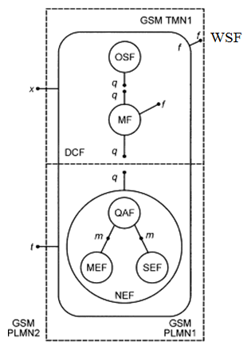

Задачи управления процессами связи в системе GSM решаются центром управления и обслуживанияОМС (Operation and Maintenance Center) (рис. 5.1).

Рис.5.1 Схема управления процессами связи в системе GSM
Где: RP - контрольные точки (интерфейсы)
q - класс контрольных точек между OS, М и NE функциями;
f - класс контрольных точек рабочей станции (с абонентами сетей GSM);
д - класс контрольных точек от рабочей станции до пользователя (MMI);
х - класс рабочих точек для связи с другими сетями, включая другие TMN;
т - нестандартные внутренние контрольные точки;
t - контрольные точки для связи с другими сетями
FB - функциональные блоки
WSF - функциональный блок рабочей станции;
OSF - функциональный блок операционных систем;
MF - промежуточный функциональный блок;
DCF - функции системы связи GSM, связанные с передачей данных;
QAF - функции адаптера Q-интерфейса;
SEF - функции поддержки (обеспечения) абонента;
MEF - функции технического обслуживания абонентов;
NEF - функции элементов сети.
В основе построения ОМС заложен принцип сетевого управления, в соответствии с которым для системы сетевого управления (GSM NM) были определены следующие задачи проектирования [1,6-7]:
1. Система GSM NM должна обеспечивать взаимодействие с существующими системами связи общего пользования и быть их естественным продолжением.
2. Система GSM NM должна быть достаточно гибкой, чтобы обеспечивать перспективное развитие наземных сетей связи общего пользования (PLMN), а также функций и служб сетевого управления.
3. Система GSM NM должна быть настолько прозрачной для технологий, используемых в существующих PLMN, насколько это возможно.
4. Система GSM NM должна иметь модульную структуру, чтобы независимоот размеров сети, где осуществляется управление, обеспечивать требуемые функции.
5. Система GSM NM не должна быть зависимой от изготовителя, то есть должна предусматривать взаимозаменяемость оборудования.
6. Структура и функции GSM NM не должны ограничивать деятельность и выбор операторов и изготовителей, а также возможность индивидуального использования, например, для организации частных локальных сетей связи.
7. Система GSM NM должна быть отказоустойчивой, то есть ни отказ
оборудования, ни человеческий фактор не должны приводить систему или сеть связи в нерабочее состояние.
Перечисленные задачи решены путем принятия для сетей связи GSM модели открытых систем (OSI) Международной организации стандартов (ISO), выбором функциональной архитектуры системы сетевого управления, учитывающей различное физическое исполнение, четким определением сопряжения стандартов и протоколов передачи сообщений.